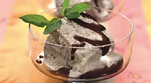

Семіфредо

Семіфредо (Semifreddo)- дивовижний старовинний італійський десерт. Його назва перекладається як «напівзаморожений», але як не дивно, він заморожений повністю. Він готується з яєць і жирних вершків з смачними добавками. Ця страва нагадує торт-морозиво, заморожений пудинг і десерт джелато, який, правда, відрізняється меншою жирністю. Семіфредо по консистенції виходить більш м'яким, ніж класичне морозиво, а подають його з солодкими соусами, ефектно прикрашаючи перед подачею.